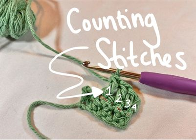
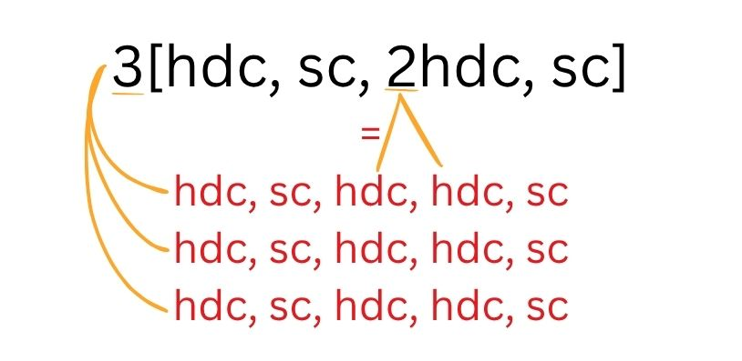

What am I looking at?
Looking at patterns for the first time as a beginner crocheter can be quite daunting. Most patterns are written the same or very similarly, so once you're able to decipher one pattern, I bet you can figure them all out! Below are the common abbreviations and structure that I have come across in my experience, but be sure to read the foreward of any patterns who might do things differently. Also, it is important to note that American and British crocheters use different names for some stitches. What I have included below are the American stitches and abbreviations.
Common abbreviations
- blo: back loop only
- bp: back post
- ch: chain
- dc: double crochet
- flo: front loop only
- hdc: half-double crochet
- rem: remaining stitches
- rep: repeat
- rs: right side
- rnd: round
- sc: single crochet
- sk: skip
- slst: slip-stitch
- tc: treble crochet
- wip: work in progress
- ws: wrong side
- yo: yarn over
Counting stitches
Many patterns will end each row with a stitch count so that you can be sure that you completed the proper amount of stitches. It can be hard to count stitches, but I find it least confusing to count the number of posts produces in the row (rather than looking only at the top of the stitches). Refer to your pattern to know if chains are meant to be counted as stitches, some crocheters write their patterns differently.

Made a mistake?
Mistakes happen. You get distracted and lose count or misread or miscounted. Luckily, crochet mistakes are pretty easy to resolve. If you made a small mistake, I often choose not to be a perfectionist and will add in or remove an extra stitch in a row so that I continue with the correct amount. This could lead your work to be slightly misshapen, so take that as you will. To properly correct mistakes, however, you can simply remove your hook and pull on your yarn to unwind your stitches until the mistake point. Then you can move forward again like normal!
Pattern format/brackets

Crochet patterns are often written using brackets much like math problems. What is inside of the brackets is repeated the number of times as specified outside of the brackets. So a pattern that reads 2[hdc, sc, ch2] is instructing you to [hdc, sc, ch2] two times over. So, you would do a hdc, a sc, and a ch2 followed by another hdc, another sc, and another ch2.